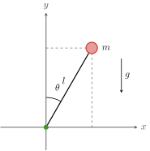
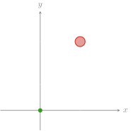
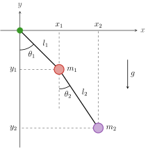
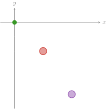
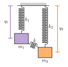
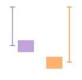
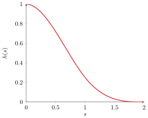
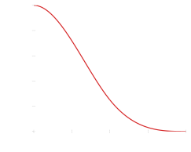

problems
pendulum


pendulum: The mathematical pendulum: a point mass m on a massless rod of length l, at the angle θ, in a gravitational field g.
light: PDF · SVG · PNG 150 · 300 · 600


dark: PDF · SVG · PNG 150 · 300 · 600


double-pendulum


double-pendulum: The double pendulum: two point masses m₁ and m₂ on massless rods of lengths l₁ and l₂, the second attached to the first.
light: PDF · SVG · PNG 150 · 300 · 600


dark: PDF · SVG · PNG 150 · 300 · 600


coupled-harmonic-oscillator


coupled-harmonic-oscillator: Visualization of the coupled harmonic oscillator.
light: PDF · SVG · PNG 150 · 300 · 600


dark: PDF · SVG · PNG 150 · 300 · 600


third-degree-spline


third-degree-spline: Third degree spline.